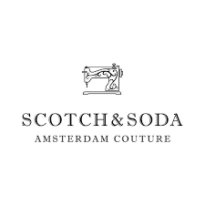

Professional Identity
Focus branding

Bekijk hier
Opdracht
De opdracht hierbij is dat je onderzoek doet naar een merk.
in canvas staan 4 merken waaruit je kunt kiezen. Ik heb persoonlijk gekozen voor Scotch&soda, omdat ik kleding een interessant onderwerp vind.
Je maakt een beknopt onderzoeksverslag van maximaal 4 pagina's waar ongeveer 16 uur werk in zit.
Bij dit onderzoek maak je ook gebruik van 1 of 2 merkonderzoek methodes zoals de brand canvas of de brand identity prism
Je bronvermelding moet voldoen aan de APA regels.
Wat heb ik geleerd?
Wat ik over het algemeen heb geleerd bij deze opdracht is hoe je onderzoek doet naar in dit geval een merk.
En dat netjes weet te documenteren in word.
Ik heb geleerd om zo'n onderzoek goed te doen, je veel in detail moet letten op welke keuzes het merk heeft gemaakt en wat de achterliggende gedachten daarbij zijn. Zoals naam, lettertype, logo etc.
Ik heb gebruik gemaakt van de brand canvas en dat heeft mij geholpen in wat ik te weten wil komen over een merk.
En dat geordend vast kan leggen door middel van beelden en tekst.
Wat kon beter?
Ik heb bij dit merkonderzoek veel gebruik gemaakt van 1 bron. Ik had daar wat meer in kunnen varieëren
Ook bestaat mijn onderzoek voornamelijk uit tekst. Ik had wat meer afbeeldingen kunnen gebruiken om bepaalde informatie duidelijker naar voren te laten komen. Het is bovendien voor de lezer ook aangenamer om naar beeldmateriaal te kijken in plaats van een grote lap tekst
Advanced Development
Opdracht
deel 1:
Ga op bijv. Google en Github op zoek naar JavaScript libraries. Zoek daar er minimaal 10 van.
Schrijf in eigen woorden kort (ongeveer 3/4 zinnen) op wat ze doen. En waar jij deze libraries voor zou kunnen gebruiken.
Bekijk hier
IN PROGRESS.....